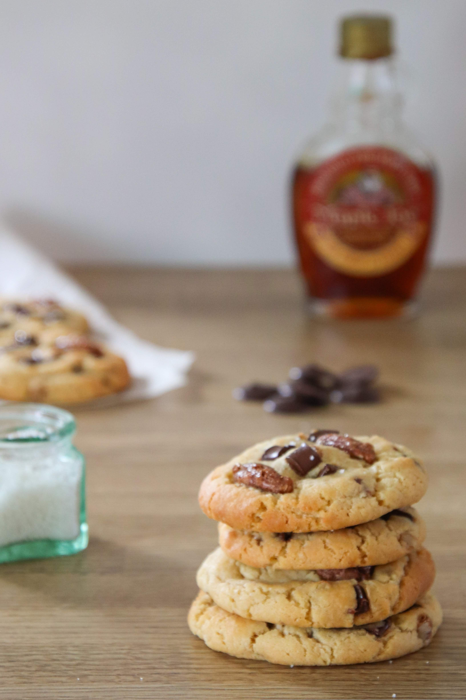

Home
Chocolate Chips Cookies Recipe

Description:
A chocolate chip cookie is a drop cookie that contains pieces of chocolate mixed into the dough before baking. Texture and appearance vary with ingredients and preparation, ranging from moist, chewy cookies to ones that are crispy.
Ingredients
- 125g of butter
- 150g of cane sugar
- 1 egg
- 200g of flour
- 1 teaspoon of baking powder
- 170g of chocolate chips
Steps
- Mix sugar and butter in a mixing bowl until it looks like softened butter (with some grains of sugar)
- Add an egg and mix again.
- Add the flour, the baking powder and the chocolate chips and mix again.
- I know it looks tempting, but don't eat it all now. Form some little balls and put them on a baking sheet covered with baking paper.
- Put in the oven at 150°C during 20 minutes. let them cool down 15 minutes after that, or they could collapse in your hands.
- Voilà! Enjoy!